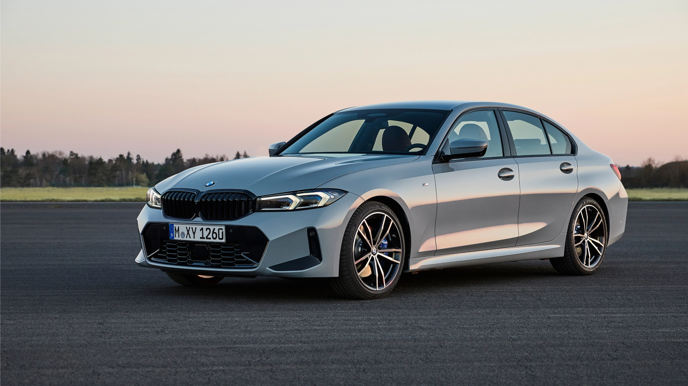

De beste auto markt

Je kan een test rit doen in deze auto, neem hiervoor contact met ons op
Deze BMW is nu beschikbaar voor $12.500 of $550 per maand
De geschiedenis van BMW
De geschiedenis begint op 15 februari 1912 bij de oprichting door de Duitse ingenieur in mechanica en luchtvaartpionier Karl Friedrich Rapp van zijn vliegtuigmotorfabriek met de naam Rapp Motorenwerke GmbH, voor het bouwen en commercialiseren van motoren voor eendekkers- en tweedekkers-vliegtuigen. Als locatie werd het Milbertshofendistrict in de Beierse stad München gekozen. Het bedrijf groeit snel en telt al 370 medewerkers in 1915. In 1916 verkoopt Karl Rapp zijn bedrijf aan Gustav Otto, die het fusioneert met zijn in 1912 opgerichte bedrijf "Aerowerke Gustav Otto" (A.G.O.). Het nieuwe bedrijf krijgt de naam Bayerische Flugzeug Werke. BMW beschouwt de oprichtingsdatum van zijn juridische voorganger Bayerische Flugzeug Werke (7 maart 1916) als zijn echte oprichtingsdatum en op 7 maart 2016 werd de 100-ste verjaardag van het concern gevierd.